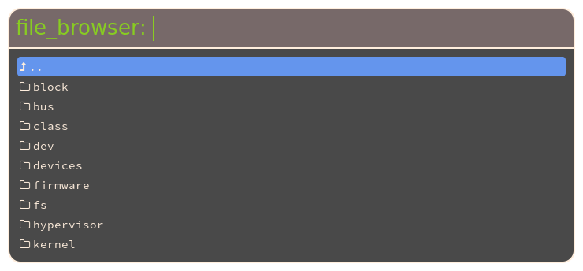

Plugins
This guide is taken from the 1.4.0 release preview posts. The information might be outdated, but in general should still be correct and a good starting point for writing a plugin. Links have been updated. A recent plugin that can be used as example can be found here.
Build system
Rofi uses autotools as build system. While there are many opinions about the pre/cons off all the different options out there (to many to go into in this blog post), we will stick to autotools for now.
To make life easier I create a template project here
This includes the 2 files for the build system and the C template.
Configure.ac
First we are going to update the configure.ac file:
AC_INIT([rofi-plugin-template], [0.0.1],
[https://my-neat-plugin.org//],[],[https://support.my-neat-plugin.org/])
AC_CONFIG_HEADER([config.h])
AC_CONFIG_MACRO_DIRS([m4])
AM_INIT_AUTOMAKE([-Wall -Werror foreign subdir-objects dist-xz])
AM_SILENT_RULES([yes])
AC_PROG_CC([clang gcc cc])
AC_PROG_CC_C99
AM_PROG_CC_C_O
AC_USE_SYSTEM_EXTENSIONS
AM_PROG_AR
AM_CFLAGS="-Wall -Wextra -Wparentheses -Winline -pedantic -Wunreachable-code"
PKG_PROG_PKG_CONFIG
PKG_CHECK_MODULES([glib], [glib-2.0 >= 2.40 gio-unix-2.0 gmodule-2.0 ])
PKG_CHECK_MODULES([rofi], [rofi])
[rofi_PLUGIN_INSTALL_DIR]="`$PKG_CONFIG --variable=pluginsdir rofi`"
AC_SUBST([rofi_PLUGIN_INSTALL_DIR])
LT_INIT([disable-static])
AC_SUBST([AM_CFLAGS])
AC_CONFIG_FILES([Makefile ])
AC_OUTPUT
Basically the only thing here we need to change is the name of the plugin, the website and the support site.
AC_INIT([rofi-file-browser], [0.0.1], [https://davedavenport.github.io/rofi/],[],[https://reddit.org/r/qtools/])
Makefile.am
We need to make a similar change in the Makefile.am file, this is important so
each plugin has a unique name. (if they are all called myplugin, it would be
hard to install more then one plugin.)
ACLOCAL_AMFLAGS=-I m4
plugindir=@rofi_PLUGIN_INSTALL_DIR@
plugin_LTLIBRARIES = myplugin.la
myplugin_la_SOURCES=\
src/myplugin.c
myplugin_la_CFLAGS= @glib_CFLAGS@ @rofi_CFLAGS@
myplugin_la_LIBADD= @glib_LIBS@ @rofi_LIBS@
myplugin_la_LDFLAGS= -module -avoid-version
So we do a search and replace from myplugin to file_browser:
ACLOCAL_AMFLAGS=-I m4
plugindir=${libdir}/rofi/
plugin_LTLIBRARIES = file_browser.la
file_browser_la_SOURCES=\
src/file_browser.c
file_browser_la_CFLAGS= @glib_CFLAGS@ @rofi_CFLAGS@
file_browser_la_LIBADD= @glib_LIBS@ @rofi_LIBS@
file_browser_la_LDFLAGS= -module -avoid-version
As you noticed I also changed the name of the c template file. This is not needed.
Building the system
Now that we have this setup, it is easy to build:
- Generate the build system:
autoreconf -i
- Create a
builddirectory.
mkdir build
cd build
- Run
configure
../configure
- build
make
- install
make install
You can now test the plugin by calling:
rofi -show myplugin -modi myplugin
If we start changing the template, the name to use will change.
Edit the C template
The first thing todo is personalize the template. Below I have modified it so it is called file-browser:
/**
* rofi-file-browser
*
* MIT/X11 License
* Copyright (c) 2017 Qball Cow <qball@gmpclient.org>
*
* Permission is hereby granted, free of charge, to any person obtaining
* a copy of this software and associated documentation files (the
* "Software"), to deal in the Software without restriction, including
* without limitation the rights to use, copy, modify, merge, publish,
* distribute, sublicense, and/or sell copies of the Software, and to
* permit persons to whom the Software is furnished to do so, subject to
* the following conditions:
*
* The above copyright notice and this permission notice shall be
* included in all copies or substantial portions of the Software.
*
* THE SOFTWARE IS PROVIDED "AS IS", WITHOUT WARRANTY OF ANY KIND, EXPRESS
* OR IMPLIED, INCLUDING BUT NOT LIMITED TO THE WARRANTIES OF
* MERCHANTABILITY, FITNESS FOR A PARTICULAR PURPOSE AND NONINFRINGEMENT.
* IN NO EVENT SHALL THE AUTHORS OR COPYRIGHT HOLDERS BE LIABLE FOR ANY
* CLAIM, DAMAGES OR OTHER LIABILITY, WHETHER IN AN ACTION OF CONTRACT,
* TORT OR OTHERWISE, ARISING FROM, OUT OF OR IN CONNECTION WITH THE
* SOFTWARE OR THE USE OR OTHER DEALINGS IN THE SOFTWARE.
*/
#include <stdlib.h>
#include <stdio.h>
#include <unistd.h>
#include <string.h>
#include <errno.h>
#include <gmodule.h>
#include <rofi/mode.h>
#include <rofi/helper.h>
#include <rofi/mode-private.h>
#include <stdint.h>
G_MODULE_EXPORT Mode mode;
/**
* The internal data structure holding the private data of the TEST Mode.
*/
typedef struct
{
char **array;
unsigned int array_length;
} FileBrowserModePrivateData;
static void get_file_browser ( Mode *sw )
{
/**
* Get the entries to display.
* this gets called on plugin initialization.
*/
}
static int file_browser_mode_init ( Mode *sw )
{
/**
* Called on startup when enabled (in modi list)
*/
if ( mode_get_private_data ( sw ) == NULL ) {
FileBrowserModePrivateData *pd = g_malloc0 ( sizeof ( *pd ) );
mode_set_private_data ( sw, (void *) pd );
// Load content.
get_file_browser ( sw );
}
return TRUE;
}
static unsigned int file_browser_mode_get_num_entries ( const Mode *sw )
{
const FileBrowserModePrivateData *pd = (const FileBrowserModePrivateData *) mode_get_private_data ( sw );
return pd->array_length;
}
static ModeMode file_browser_mode_result ( Mode *sw, int mretv, char **input, unsigned int selected_line )
{
ModeMode retv = MODE_EXIT;
FileBrowserModePrivateData *pd = (FileBrowserModePrivateData *) mode_get_private_data ( sw );
if ( mretv & MENU_NEXT ) {
retv = NEXT_DIALOG;
} else if ( mretv & MENU_PREVIOUS ) {
retv = PREVIOUS_DIALOG;
} else if ( mretv & MENU_QUICK_SWITCH ) {
retv = ( mretv & MENU_LOWER_MASK );
} else if ( ( mretv & MENU_OK ) ) {
retv = RELOAD_DIALOG;
} else if ( ( mretv & MENU_ENTRY_DELETE ) == MENU_ENTRY_DELETE ) {
retv = RELOAD_DIALOG;
}
return retv;
}
static void file_browser_mode_destroy ( Mode *sw )
{
FileBrowserModePrivateData *pd = (FileBrowserModePrivateData *) mode_get_private_data ( sw );
if ( pd != NULL ) {
g_free ( pd );
mode_set_private_data ( sw, NULL );
}
}
static char *_get_display_value ( const Mode *sw, unsigned int selected_line, G_GNUC_UNUSED int *state, G_GNUC_UNUSED GList **attr_list, int get_entry )
{
FileBrowserModePrivateData *pd = (FileBrowserModePrivateData *) mode_get_private_data ( sw );
// Only return the string if requested, otherwise only set state.
return get_entry ? g_strdup("n/a"): NULL;
}
static int file_browser_token_match ( const Mode *sw, GRegex **tokens, unsigned int index )
{
FileBrowserModePrivateData *pd = (FileBrowserModePrivateData *) mode_get_private_data ( sw );
// Call default matching function.
return helper_token_match ( tokens, pd->array[index]);
}
Mode mode =
{
.abi_version = ABI_VERSION,
.name = "file_browser",
.cfg_name_key = "display-file_browser",
._init = file_browser_mode_init,
._get_num_entries = file_browser_mode_get_num_entries,
._result = file_browser_mode_result,
._destroy = file_browser_mode_destroy,
._token_match = file_browser_token_match,
._get_display_value = _get_display_value,
._get_message = NULL,
._get_completion = NULL,
._preprocess_input = NULL,
.private_data = NULL,
.free = NULL,
};
If we now rebuild the plugin, we need to run the following command:
rofi -show file_browser -modi file_browser
The mode description
The mode is defined by the Mode structure, every mode in rofi has one of the
plugins.
Mode mode =
{
.abi_version = ABI_VERSION,
.name = "file_browser",
.cfg_name_key = "display-file_browser",
._init = file_browser_mode_init,
._get_num_entries = file_browser_mode_get_num_entries,
._result = file_browser_mode_result,
._destroy = file_browser_mode_destroy,
._token_match = file_browser_token_match,
._get_display_value = _get_display_value,
._get_message = NULL,
._get_completion = NULL,
._preprocess_input = NULL,
.private_data = NULL,
.free = NULL,
};
The ABI_VERSION is defined in rofi header file, so that rofi can detect what ABI the plugin was compiled against. Not every function needs to be implemented, in the plugin we show the minimum set.
Lets modify each of the above functions to implement something useful.
FileBrowserModePrivateData
This is a structure that holds all the private data of this mode. We are going to extend this so it can hold the state of information we want to view.
We want to differentiate between 3 different rows:
- Go one level up
- Directory
- Regular file
So we add an enum:
enum FBFileType {
UP,
DIRECTORY,
RFILE,
};
We need a structure that hold each entry.
-
It should have a name we are going to show the user. This will hold an
utf-8string. (rofi will only display utf-8). -
It should hold the path to the entry. This will be in the file-systems encoding.
-
The type it holds.
typedef struct {
char *name;
char *path;
enum FBFileType type;
} FBFile;
Then in the private data we hold all the relevant information.
- The current directory to show.
- Array of all the FBFile we want to show.
- The length of the array.
typedef struct
{
GFile *current_dir;
FBFile *array;
unsigned int array_length;
} FileBrowserModePrivateData;
Initialization
Now that we have the data structure to hold our information, we need to initialize it and fill it.
static int file_browser_mode_init ( Mode *sw )
{
if ( mode_get_private_data ( sw ) == NULL ) {
FileBrowserModePrivateData *pd = g_malloc0 ( sizeof ( *pd ) );
mode_set_private_data ( sw, (void *) pd );
pd->current_dir = g_file_new_for_path(g_get_home_dir () );
get_file_browser ( sw );
}
return TRUE;
}
The function first checked if we already initialized the private data. You can include a mode multiple times, and we normally don't want it initialized multiple times.
We then create a, zero initialized, FileBrowserModePrivateData structure and
set this on the mode. Set the current directory to the users home directory and
call get_file_browser that will load in the entries. We will discuss this one
later.
Destroying
On shutdown we want to cleanup, so there is also a destroy function.
static void file_browser_mode_destroy ( Mode *sw )
{
FileBrowserModePrivateData *pd = (FileBrowserModePrivateData *) mode_get_private_data ( sw );
if ( pd != NULL ) {
g_object_unref ( pd->current_dir );
free_list ( pd );
g_free ( pd );
mode_set_private_data ( sw, NULL );
}
}
This does the exact opposite.
For completeness:
static void free_list ( FileBrowserModePrivateData *pd )
{
for ( unsigned int i = 0; i < pd->array_length; i++ ) {
FBFile *fb = & ( pd->array[i] );
g_free ( fb->name );
g_free ( fb->path );
}
g_free (pd->array);
pd->array = NULL;
pd->array_length = 0;
}
Loading the entries
Lets dive deeper into the get_file_browser function.
static void get_file_browser ( Mode *sw )
{
FileBrowserModePrivateData *pd = (FileBrowserModePrivateData *) mode_get_private_data ( sw );
We want to get access to the private data structure.
char *cdir = g_file_get_path ( pd->current_dir );
DIR *dir = opendir ( cdir );
if ( dir ) {
struct dirent *rd = NULL;
while ((rd = readdir (dir)) != NULL )
{
We open the directory and we iterate over each entry. We then want to skip over hidden files (starting with a .) and insert a special up node for going up one directory. For this we do not need a path, and we show ".." to the user.
if ( g_strcmp0 ( rd->d_name, ".." ) == 0 ){
pd->array = g_realloc ( pd->array, (pd->array_length+1)*sizeof(FBFile));
pd->array[pd->array_length].name = g_strdup ( ".." );
pd->array[pd->array_length].path = NULL;
pd->array[pd->array_length].type = UP;
pd->array_length++;
continue;
} else if ( rd->d_name[0] == '.' ) {
continue;
}
We do a similar filtering act for the rest of the files, we skip fifo, blk,character and socket files.
switch ( rd->d_type )
{
case DT_BLK:
case DT_CHR:
case DT_FIFO:
case DT_UNKNOWN:
case DT_SOCK:
break;
case DT_REG:
case DT_DIR:
pd->array = g_realloc ( pd->array, (pd->array_length+1)*sizeof(FBFile));
pd->array[pd->array_length].name = g_strdup ( rd->d_name );
pd->array[pd->array_length].path = g_build_filename ( pd->current_dir, rd->d_name, NULL );
pd->array[pd->array_length].type = (rd->d_type == DT_DIR)? DIRECTORY: RFILE;
pd->array_length++;
}
}
closedir ( dir );
}
We then sort the list in a way the user expects this.
g_qsort_with_data ( pd->array, pd->array_length, sizeof (FBFile ), compare, NULL );
}
Qsort here uses the following sort function:
static gint compare ( gconstpointer a, gconstpointer b, gpointer data )
{
FBFile *fa = (FBFile*)a;
FBFile *fb = (FBFile*)b;
if ( fa->type != fb->type ){
return (fa->type - fb->type);
}
return g_strcmp0 ( fa->name, fb->name );
}
Showing the entries
When showing each entry, rofi calls the _get_display_value function. It calls
them in two situations, to get the state and the display string. Or just to get
the new state. If you need to return a string (should always be malloced), the
get_entry parameter is set to 1.
We currently show the name, and prepend an icon using the Awesome Font.
static char *_get_display_value ( const Mode *sw, unsigned int selected_line, G_GNUC_UNUSED int *state, G_GNUC_UNUSED GList **attr_list, int get_entry )
{
FileBrowserModePrivateData *pd = (FileBrowserModePrivateData *) mode_get_private_data ( sw );
// Only return the string if requested, otherwise only set state.
if ( !get_entry ) return NULL;
if ( pd->array[selected_line].type == DIRECTORY ){
return g_strdup_printf ( " %s", pd->array[selected_line].name);
} else if ( pd->array[selected_line].type == UP ){
return g_strdup( " ..");
} else {
return g_strdup_printf ( " %s", pd->array[selected_line].name);
}
return g_strdup("n/a");
}
The selected_line setting will always be within range 0 and the result of
.get_num_entries.
static unsigned int file_browser_mode_get_num_entries ( const Mode *sw )
{
const FileBrowserModePrivateData *pd = (const FileBrowserModePrivateData *) mode_get_private_data ( sw );
return pd->array_length;
}
The
attr_listargument is there for more advanced markup of the string.
Filtering the entries
When filtering we want to filter on the file name, we luckily store this entry
in FBFile::name. To use rofi's matching algorithm we can use the
helper_token_match function.
static int file_browser_token_match ( const Mode *sw, GRegex **tokens, unsigned int index )
{
FileBrowserModePrivateData *pd = (FileBrowserModePrivateData *) mode_get_private_data ( sw );
// Call default matching function.
return helper_token_match ( tokens, pd->array[index].name);
}
The index setting will always be within range 0 and the result of
.get_num_entries.
Running it
Now we should be able to build it, install it and run it and see the result.
rofi -show file_browser -modi file_browser

Handling selected entries
This is just an example and can probably be implemented nicer. Here it also shows some rudimentary parts in rofi, that show some of the ugly details, that will be cleaned up in the future.
static ModeMode file_browser_mode_result ( Mode *sw, int mretv, char **input, unsigned int selected_line )
{
ModeMode retv = MODE_EXIT;
FileBrowserModePrivateData *pd = (FileBrowserModePrivateData *) mode_get_private_data ( sw );
if ( mretv & MENU_NEXT ) {
retv = NEXT_DIALOG;
} else if ( mretv & MENU_PREVIOUS ) {
retv = PREVIOUS_DIALOG;
} else if ( mretv & MENU_QUICK_SWITCH ) {
retv = ( mretv & MENU_LOWER_MASK );
This is the user pressing enter on the entry. We handle it differently for
each type.
} else if ( ( mretv & MENU_OK ) ) {
if ( selected_line < pd->array_length )
{
if ( pd->array[selected_line].type == UP ) {
GFile *new = g_file_get_parent ( pd->current_dir );
if ( new ){
g_object_unref ( pd->current_dir );
pd->current_dir = new;
free_list (pd);
get_file_browser ( sw );
return RESET_DIALOG;
}
} else if ( pd->array[selected_line].type == DIRECTORY ) {
GFile *new = g_file_new_for_path ( pd->array[selected_line].path );
g_object_unref ( pd->current_dir );
pd->current_dir = new;
free_list (pd);
get_file_browser ( sw );
return RESET_DIALOG;
} else if ( pd->array[selected_line].type == RFILE ) {
char *d = g_strescape ( pd->array[selected_line].path,NULL );
char *cmd = g_strdup_printf("xdg-open '%s'", d );
g_free(d);
char *cdir = g_file_get_path ( pd->current_dir );
helper_execute_command ( cdir,cmd, FALSE );
g_free ( cdir );
g_free ( cmd );
return MODE_EXIT;
}
}
retv = RELOAD_DIALOG;
Handle custom entry that does not match an entry:
} else if ( (mretv&MENU_CUSTOM_INPUT) && *input ) {
char *p = rofi_expand_path ( *input );
char *dir = g_filename_from_utf8 ( p, -1, NULL, NULL, NULL );
g_free (p);
if ( g_file_test ( dir, G_FILE_TEST_EXISTS ) )
{
if ( g_file_test ( dir, G_FILE_TEST_IS_DIR ) ){
g_object_unref ( pd->current_dir );
pd->current_dir = g_file_new_for_path ( dir );
g_free ( dir );
free_list (pd);
get_file_browser ( sw );
return RESET_DIALOG;
}
}
g_free ( dir );
retv = RELOAD_DIALOG;
We do not support delete, just reload.
} else if ( ( mretv & MENU_ENTRY_DELETE ) == MENU_ENTRY_DELETE ) {
retv = RELOAD_DIALOG;
}
return retv;
}
The RESET_DIALOG will clear the input bar and reload the view, RELOAD_DIALOG
will reload the view and re-filter based on the current text.
Note:
rofi_expand_pathwill expand~and~me/into it full absolute path. Note:helper_execute_commandwill spawn command.